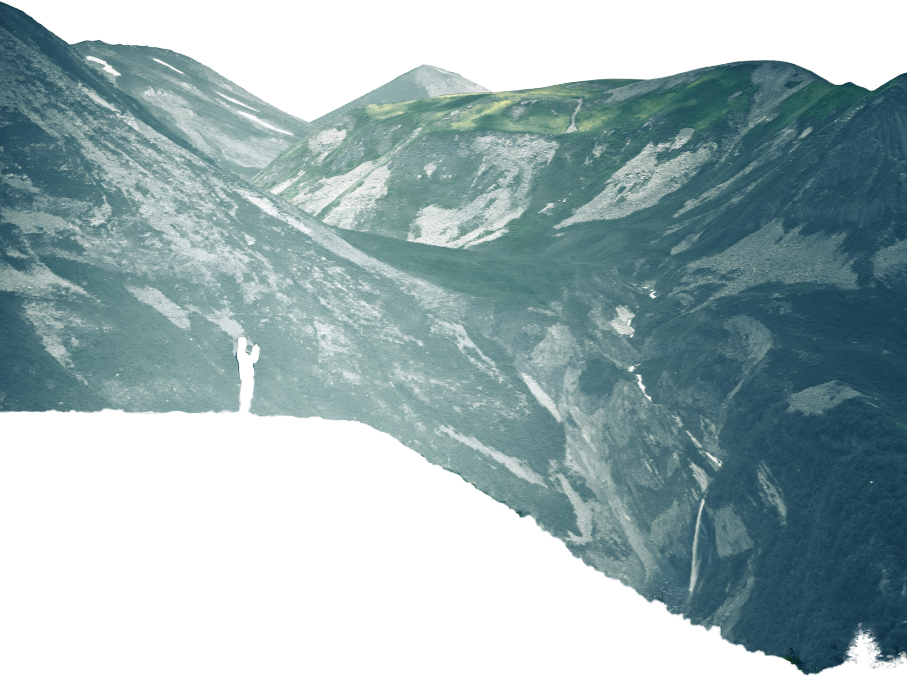
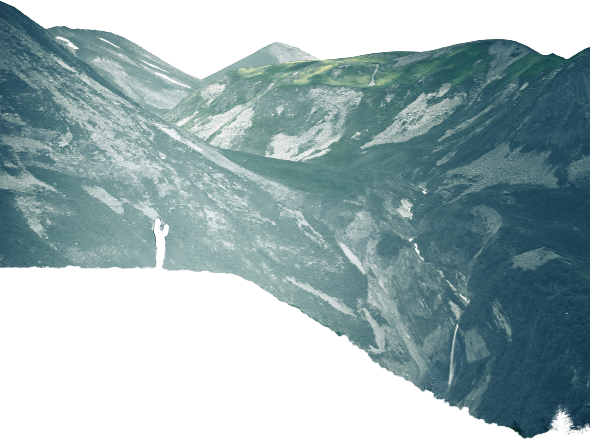
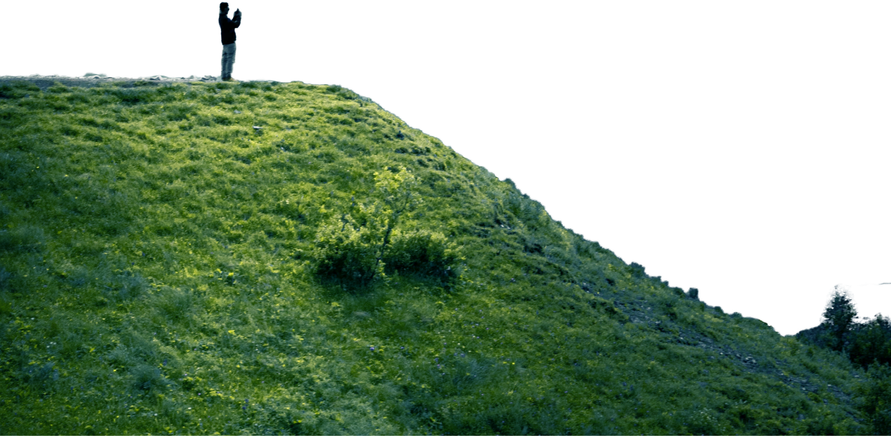
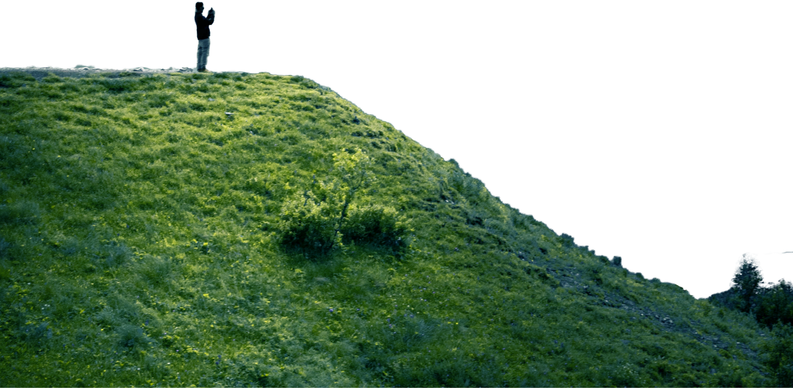

 



What level of hiker are you?
Determining what level of hiker you are can be an important tool when planning future hikes. This hiking level guide will help you plan hikes according to different hike ratings set by various websites like All Trails and Modern Hiker. What type of hiker are you – novice, moderate, advanced moderate, expert, or expert backpacker?